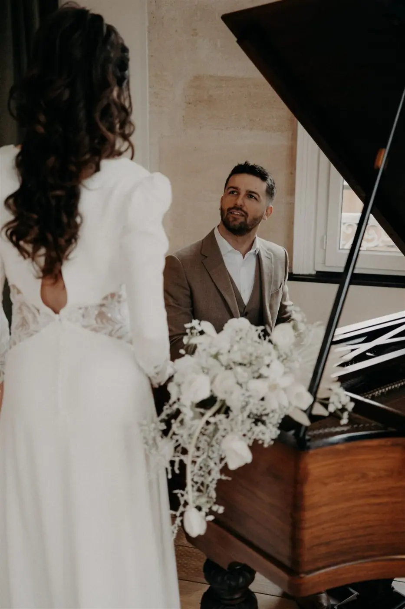
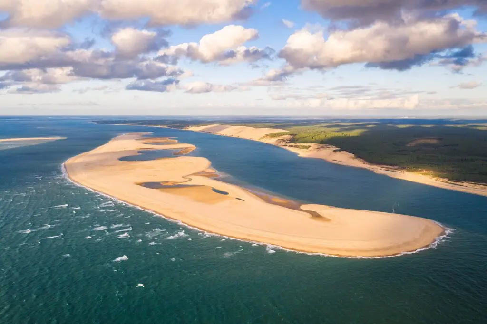
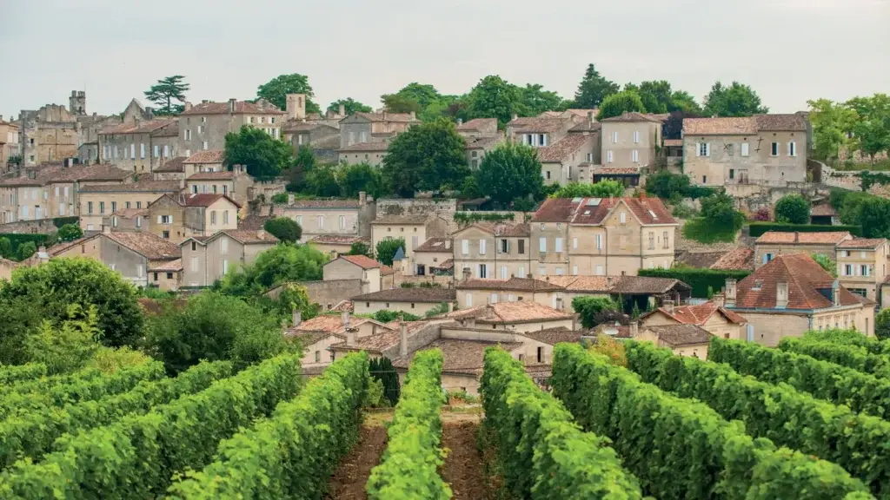
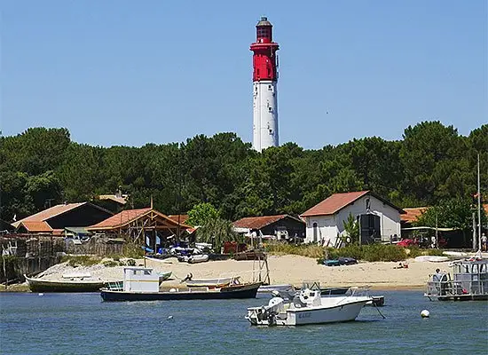
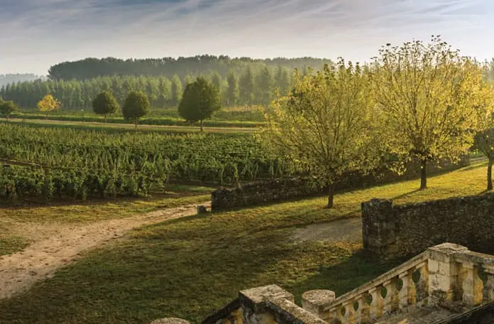
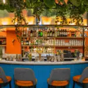

Vous aspirez à un mariage intime en région Bordelaise, loin du tumulte habituel, où vous et votre partenaire pouvez vivre le bonheur sans vous soucier des regards extérieurs. C’est ce que propose l’elopement, une tendance de plus en plus prisée par les couples désireux de célébrer leur union de manière authentique et simplifiée.
L’elopement, c’est choisir de se marier en petit comité, dans un cadre idyllique, en mettant de côté les formalités et les grandes réceptions surtout dans la région Bordelaise. Cette alternative séduit pour son approche centrée sur l’amour et la complicité, permettant aux mariés de profiter pleinement de leur journée.
Ce mode de mariage vous intéresse mais vous ne savez comment l’organiser alors suivez-moi et je vous explique tout.
Qu’est-ce que l’elopement ?

Ce concept, tiré de l’anglais « to elope », évoque le secret désir de s’évader à deux, ou accompagné de quelques intimes, pour célébrer son union dans un cadre idyllique, en toute discrétion. Cette fugue amoureuse représente une tendance moderne dans l’univers du mariage. Elle favorise une cérémonie intime et simplifiée, loin des complexités d’une célébration traditionnelle. Cela vous correspond si vous souhaitez vivre votre engagement de façon authentique et profonde en vous focalisant sur ce qui compte vraiment pour vous : vos sentiments, votre complicité et le désir de partager votre vie avec l’être aimé.
Rassurez vous ce choix ne signifie pas fuir ses responsabilités, mais plutôt faire un choix mûrement réfléchi et personnel. Il ne s’agit pas de se détacher de sa famille ou de ses amis, mais de privilégier des moments de qualité avec ses proches essentiels. Vous n’avez pas à renoncer aux festivités mais à organiser cette célébration en étant plus centré sur vos désirs et votre vision du mariage idéal. Vous pourrez savourer chaque moment, en créant des souvenirs mémorables.
En somme, c’est une belle alternative au mariage traditionnel, séduisant les couples désireux de célébrer leur amour d’une manière différente. Et je suis là pour vous expliquer comment et où organiser cet elopement pour qu’il soit votre meilleur souvenir.
Comment organiser un elopement ?
Faire un eloppement ne signifie pas de faire l'impasse sur les invités, il requiert au moins 2 témoins présent de votre amour pour que l’union soit légalement valide.
La cérémonie laïque est particulièrement adaptée à l'elopement, car elle offre une grande liberté de personnalisation de votre union, sans les contraintes des conventions ou des attentes familiales. Vous avez la liberté de sélectionner le lieu, le décor, les rituels, la musique et les lectures qui vous parlent le plus.
Avez-vous déjà été à un mariage elopement ?

Où faire son elopement dans la région Bordelaise ?
La région bordelaise, avec sa diversité de paysages et de lieux charmants, représente le cadre idéal pour un elopement romantique et mémorable.
Que votre passion soit la nature, la culture ou la gastronomie, cette région saura combler vos désirs. Découvrez ci-dessous quelques-uns des meilleurs lieux pour réaliser votre elopement dans la région bordelaise.

Arcachon
Cette station balnéaire réputée vous offre un cadre enchanté pour votre elopement. Prononcez vos vœux sur la plage, devant le bassin d’Arcachon et la dune du Pilat, ou optez pour une villa ou un hôtel en bord de mer. Profitez également des activités nautiques, des marchés et des spécialités locales, telles que les huîtres et les cannelés.
Saint-Emilion
Ce village médiéval, à la fois prestigieux et authentique, constitue un lieu d’elopement exceptionnel. Vous pouvez choisir de vous marier dans une église, une cave ou au sein d’un domaine viticole, et savourer les célèbres vins et macarons de la région. Ne manquez pas de visiter le patrimoine mondial de l’UNESCO du village, incluant la tour du Roy, la collégiale et les catacombes.


Le Cap Ferret
La presqu’île offre un cadre sauvage et élégant pour célébrer votre amour durant votre cérémonie. Échangez vos alliances sur la pointe, face à l’océan et au phare, ou dans une cabane ou maison de pêcheur. C’est l’occasion de profiter de la nature, des plages et des produits de la mer, comme les moules et les crevettes.
Sauternes
Ce village est parfait pour un elopement gourmand et romantique. Unissez-vous dans un château, un vignoble ou une maison d’hôtes, et délectez-vous du vin et du foie gras locaux. Découvrez également le terroir, les paysages et les traditions authentiques de ce village, célèbre pour son vin liquoreux.

La région bordelaise est une destination de choix pour un elopement de rêve, offrant un éventail d’options pour célébrer votre amour dans un cadre unique et authentique.
Activités à organiser lors de son elopement
L’elopement, plus qu’une simple cérémonie de mariage, est une aventure intime et personnalisée. Le nombre limité d’invité donne l’opportunité de vivre des moments forts et mémorables dans un cadre de rêve. Pour enrichir cette expérience unique, intégrer des activités qui vous ressemblent.
FL140 Lacanau
Si vous êtes amateurs de sensations fortes osez le saut en parachute. Cette expérience forte en émotion symbolisera parfaitement votre esprit aventureux. De plus, elle vous offrira une perspective unique sur votre lieu de célébration, en vous faisant éprouver un sentiment de liberté absolue.
Sud-ouest montgolfière
Pour les romantiques, vous pouvez faire une balade en montgolfière. Survolez le lieu de la cérémonie, admirez les paysages vus du ciel et vivez un moment magique en finissant votre elopement la tête dans les nuages.

Le Bam
Si vous souhaitez plutôt faire la fête jusqu’au bout de la nuit, pas de problème. Après le repas vous pouvez finir votre soirée dans un bar karaoké comme le Bam. Laissez-vous emporter par le rythme endiablé de la musique et chantez à tue-tête en appréciant des cocktails savoureux.
Célébrez votre elopement à travers des activités qui vous ressemblent et partagez avec vos proches ou seulement votre partenaire vous permettra de créer des souvenirs mémorables, gravés à jamais dans votre mémoire et votre cœur.
Les avantages de l'elopement
Vous voulez une belle cérémonie remplie d’amour mais pas une grande réception comme dans les films romantiques mais plutôt une escapade intime en amoureux alors l’elopement est la cérémonie qu’il vous conviendra le mieux.
Plutôt qu’un mariage traditionnel l’elopement vous offre de nombreux avantages.
Tout d’abord un avantage financier. En limitant le nombre d’invités, vous réduisez considérablement les coûts associés au lieu de réception, d’hébergement, et au service de prestataires. Cela vous donne l’opportunité d’allouer votre budget à des éléments qui comptent davantage pour vous, comme le voyage de noces, la robe de mariée, ou les alliances qui rendront ce jour unique.
Ensuite l’elopement est synonyme de simplicité en vous affranchissant des contraintes liées à une cérémonie traditionnelle. Pas de souci à se faire concernant les préparatifs complexes, le protocole à suivre, ou le regard des autres. Cela vous permet de vous concentrer sur ce qui est véritablement important : votre amour.
De plus, vous avez la liberté de personnaliser votre cérémonie à votre guise, sans devoir vous conformer aux attentes sociales ou familiales. Et surtout, se marier en petit comité, ou juste à deux, garantit une expérience intime et authentique. Vous avez la liberté de choisir un cadre qui vous inspire, que ce soit une plage idyllique, une montagne majestueuse, ou une ville chargée d’histoire.
En bref...
Choisir elopement, c’est choisir une manière moderne et intime de célébrer votre amour. Cette tendance vous offre l’opportunité de vous unir dans un cadre idyllique, en toute simplicité, que ce soit en tête-à-tête ou accompagnés de vos proches les plus chers. Chaque instant de votre mariage devient ainsi un reflet fidèle de votre couple, empreint d’authenticité et de magie.
Cette option n’est pas seulement romantique, elle est également pragmatique. Elle vous permet de bénéficier d’avantages considérables tels que des économies significatives, une flexibilité totale dans l’organisation et une intensité émotionnelle décuplée. N’hésitez pas à solliciter mon aide de prestataire avisée pour vous guider et vous accompagner dans cette belle aventure.
La région de Bordeaux se présente comme une destination de choix pour votre elopement, avec sa variété de paysages enchanteurs et ses lieux pleins de charme. C’est également l’occasion de découvrir le secret des vins exquis, la richesse gastronomique et les activités diverses de la région, ajoutant ainsi une touche de plaisir et d’originalité à votre célébration.
Si vous êtes séduits par l’idée d’un mariage intime et personnalisé, l’elopement est fait pour vous. Contactez-moi sans attendre pour concrétiser votre projet de mariage de rêve !